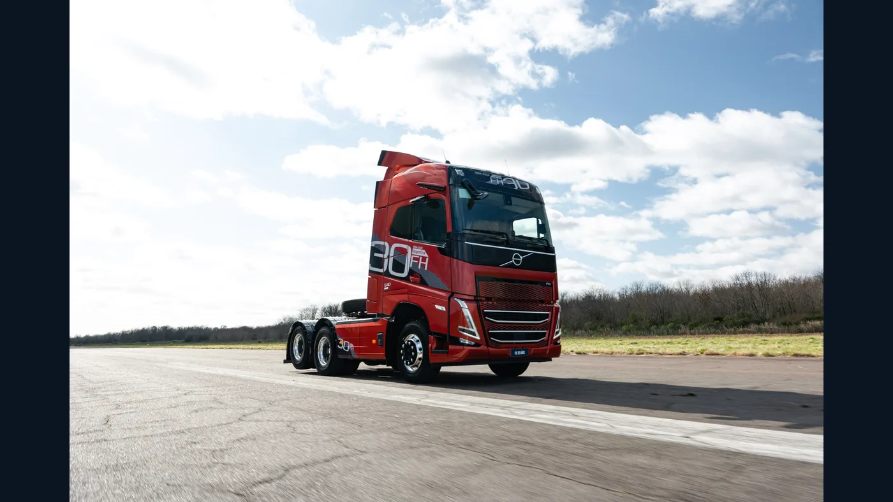

¿Existe un camión que sea “el mejor” para todos los transportistas de un país? No. Un reparto urbano, un semirremolque de larga distancia y una obra en altura exigen vehículos distintos. En esta guía proponemos una elección editorial para un trabajo representativo en cada uno de veinte países latinoamericanos. No es un ranking oficial, una tabla de patentamientos ni una promesa de que esa versión sea la más vendida.
Tomamos como punto de partida catálogos, páginas de fabricantes y redes de concesionarios consultables en octubre de 2026. Valoramos que exista una referencia pública de producto o soporte en el país, además de la adecuación técnica general a la misión elegida. Las fichas varían por mercado: antes de comprar hay que confirmar versión, homologación, stock, servicio y costo total con el representante local.
México y América Central
México: Freightliner Cascadia
Para qué lo elegiríamos: ruta larga y flotas con recorridos constantes. La marca ofrece el Cascadia en México con un planteo centrado en eficiencia, seguridad y conectividad. Para el reparto dentro de una ciudad sería una elección sobredimensionada: aquí gana por la misión de tractocamión carretero. Ver oferta o respaldo local.
Guatemala: Hino Serie 500
Para qué lo elegiríamos: distribución regional y carga media. El catálogo guatemalteco publica versiones de distinta capacidad y longitud de chasis. Esa variedad facilita definir un carrozado según la carga; conviene comparar el peso útil real una vez terminada la carrocería. Ver oferta o respaldo local.
El Salvador: Isuzu NPR
Para qué lo elegiríamos: entrega urbana y rutas cortas. La Serie N es un punto de partida compacto para caja seca, refrigerada u otros carrozados ligeros. Isuzu identifica un concesionario autorizado en el país, pero la variante exacta se debe consultar allí. Ver oferta o respaldo local.
Honduras: Isuzu NPR
Para qué lo elegiríamos: reparto comercial con frecuentes paradas. La cabina adelantada favorece una longitud útil de carrozado sin convertirlo en un tractocamión pesado. La red regional identifica atención local; no asumimos que todas las versiones del catálogo latinoamericano estén disponibles. Ver oferta o respaldo local.
Nicaragua: Isuzu NPR
Para qué lo elegiríamos: logística de cercanía y abastecimiento. Lo destacamos por ser una familia de camiones livianos que admite diferentes implementos. El concesionario local figura en la red de la marca; capacidad de carga y motor deben pedirse para la unidad ofrecida. Ver oferta o respaldo local.
Costa Rica: Isuzu NPR
Para qué lo elegiríamos: distribución urbana y periurbana. Isuzu publica incluso variantes NPR identificadas para Costa Rica. Eso da una referencia más concreta que trasladar una ficha de otro país, aunque todavía hay que revisar carga útil, emisiones y posventa de la configuración elegida. Ver oferta o respaldo local.
Panamá: Isuzu NPR
Para qué lo elegiríamos: última milla y distribución entre centros logísticos. La red regional lista un representante autorizado en Panamá. Elegimos un camión de reparto; para contenedores o carga de puerto haría falta evaluar otra clase de vehículo y la operación específica. Ver oferta o respaldo local.
Caribe latino
Cuba: Mitsubishi Fuso FE
Para qué lo elegiríamos: carga urbana y regional ligera. Un catálogo de MCV Comercial muestra camiones Fuso FE de plataforma y furgón y documenta respaldo del distribuidor. Es una referencia de 2024, no prueba stock en 2026; la decisión depende especialmente de confirmar unidades, piezas y condiciones de compra vigentes. Ver oferta o respaldo local.
Haití: Isuzu NPR
Para qué lo elegiríamos: reparto y servicios donde importa un chasis adaptable. La red de Isuzu identifica a Automeca como representante local. La página regional describe la Serie NPR, pero no especifica allí qué versión se entrega en Haití; por eso esta elección es provisional hasta comprobar oferta y servicio en la zona de trabajo. Ver oferta o respaldo local.
República Dominicana: Isuzu NPR
Para qué lo elegiríamos: distribución insular y reparto comercial. La presencia de Autocamiones en la red oficial aporta una vía concreta de consulta de posventa. Seleccionamos un vehículo de carga ligera, no un sustituto de un pesado para trabajos portuarios. Ver oferta o respaldo local.

América del Sur
Colombia: Kenworth T680 Next Gen
Para qué lo elegiríamos: tractocamión para recorridos interurbanos. El representante colombiano comercializa el T680 Next Gen y destaca su tren motriz y cabina. En una ruta andina la potencia nominal por sí sola no decide: hay que dimensionar peso, pendientes, frenado y soporte sobre el recorrido real. Ver oferta o respaldo local.
Venezuela: JAC Búfalo
Para qué lo elegiríamos: carga regional de media capacidad. La oferta local de JAC enumera versiones Búfalo y otros vehículos de carga. El modelo merece atención como alternativa disponible para cotizar; la ficha concreta, la red de atención y el costo de repuestos deben verificarse antes de compararlo con un importado. Ver oferta o respaldo local.
Ecuador: Hino Serie 500
Para qué lo elegiríamos: distribución regional y trabajos que precisan carrozado. Teojama muestra la Serie 500 dentro de su oferta comercial ecuatoriana. La familia abarca más de una configuración: escoger por terreno y peso efectivo es más importante que quedarse solo con el número de serie. Ver oferta o respaldo local.
Perú: Volvo FH
Para qué lo elegiríamos: larga distancia de carga pesada. Volvo publica una red nacional de concesionarios y talleres en Perú. Ese alcance interesa en rutas extensas; para una operación minera fuera de camino, en cambio, el FMX podría encajar mejor que un FH de carretera. Ver oferta o respaldo local.
Bolivia: Volvo FMX
Para qué lo elegiríamos: construcción, minería y caminos exigentes. La oferta boliviana distingue al FMX del FH de larga distancia. Lo elegimos para trabajo severo, no como respuesta universal para todo transportista; además hay que consultar si el servicio cubre el punto donde opera la flota. Ver oferta o respaldo local.
Chile: Scania Super
Para qué lo elegiríamos: transporte pesado de largo recorrido. La marca presenta el tren motriz Super en Chile con distintas potencias y configuraciones. Las mejoras de consumo anunciadas por el fabricante son comparaciones bajo condiciones definidas, no un ahorro garantizado para cualquier ruta. Ver oferta o respaldo local.
Brasil: Volvo FH
Para qué lo elegiríamos: larga distancia con semirremolque. Volvo Brasil ofrece el FH y detalla soluciones de gestión del torque, cabina y conducción. En un mercado tan diverso, un camión para ruta no reemplaza a un distribuidor urbano: la elección corresponde a esta aplicación concreta. Ver oferta o respaldo local.
Paraguay: Mercedes-Benz Actros
Para qué lo elegiríamos: tracción de cargas sobre rutas internacionales. El representante local publica el Actros como camión pesado. Antes de elegirlo conviene revisar configuración de ejes, contrato de mantenimiento y cobertura en los corredores que cruza la flota. Ver oferta o respaldo local.
Uruguay: Volkswagen Constellation
Para qué lo elegiríamos: distribución regional y rutas de carga general. La página uruguaya ofrece varias versiones Constellation para ciudad, ruta y usos rurales. Nuestra elección es la familia, no una sola ficha: un 17.190 de reparto y un 25.460 de larga distancia no realizan el mismo trabajo. Ver oferta o respaldo local.
Argentina: IVECO Tector
Para qué lo elegiríamos: carga media y distribución regional. IVECO destaca su producción local y presenta configuraciones Tector para tareas agroindustriales y de reparto. Un Tector no es el mejor para todo: si la misión exige gran volumen de larga distancia o tracción fuera de camino, corresponde comparar otras gamas. Ver oferta o respaldo local.

Por qué se repiten algunas marcas
La repetición del Isuzu NPR en varios países centroamericanos y caribeños no quiere decir que toda la región compre el mismo camión ni que gane en ventas. Refleja un criterio verificable: existe una ficha regional de la Serie N y una red de representantes identificable en esos mercados. En algunos países, la información pública sobre una versión concreta es limitada; preferimos decirlo a inventar un modelo exclusivo por bandera.
Lo mismo ocurre al comparar un FH brasileño con uno peruano: el nombre de familia no fija motor, normativa de emisiones, caja, relación de ejes ni equipamiento. Dos camiones llamados igual pueden requerir repuestos diferentes. Para un negocio de piezas, el VIN y el código de componente son más útiles que el título de una lista.
Cómo elegir el mejor para una flota real
Primero se define la misión: carga útil y volumen, recorrido, pendientes, calles, superficie, frecuencia de paradas y posibilidad de volver a base. Después se compara el costo total de operación: adquisición, combustible, neumáticos, mantenimiento, seguro, financiación y horas inmovilizadas. Una ficha con más potencia no gana automáticamente si aumenta el costo por tonelada transportada.
La posventa merece una prueba igual de concreta. Preguntá dónde está el taller que puede atender la unidad, cuánto tarda una pieza crítica, qué herramientas exige la versión y si hay soporte en la ruta. Para carrozar, verificá que la capacidad final y la distribución de pesos sigan dentro de los límites homologados. Un camión puede ser excelente en catálogo y poco conveniente si la operación queda lejos de toda asistencia.
Lo que esta lista no demuestra
No publicamos una tabla de ventas por país porque no contamos con una base comparable para los veinte mercados. Tampoco calculamos un puntaje único entre clases tan distintas: un NPR de reparto y un Cascadia de carretera no compiten por la misma carga. La palabra “mejor” designa aquí una opción editorial razonada para una misión explícita, apoyada en fuentes de producto o presencia local, no una certificación independiente de calidad.
Los casos con menor evidencia pública, especialmente Cuba y Haití, exigen más cautela. Sus referencias de oferta o concesionario no bastan para asegurar disponibilidad actual de una versión. Antes de cerrar una compra, solicitar una propuesta escrita, ficha exacta, condiciones de garantía y confirmación de repuestos es el paso que transforma una sugerencia de lectura en una decisión responsable.